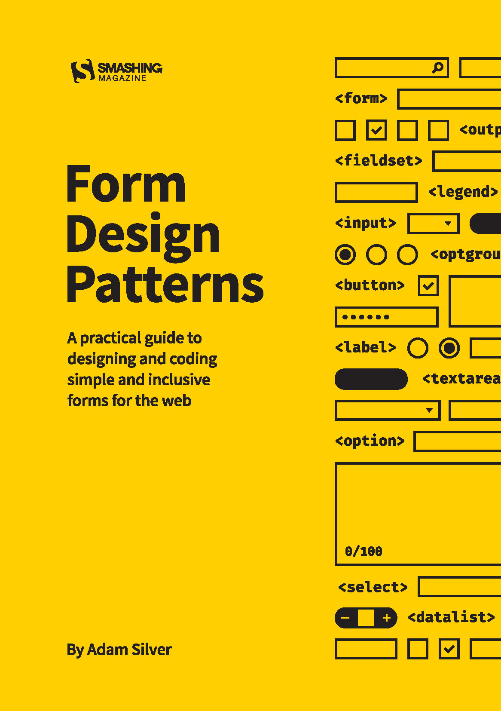

Accessibility primer for web developers
The What, the Why and the How
Who's that guy?
- › Interior Designer by training, writing code since the age of 10
- › building websites since the mid 90s
- › running tollwerk
- › qualified WCAG tester & consultant
- › organizing events (Accessibility Club, CoderDojo Nürnberg …)
What is he talking about?
- Accessibility on the Web
-
- What, for whom and why
- Rules, standards & legal situation
- Getting started (as developers)
-
- Some very basic a11y must-haves
Web accessibility
Users, barriers and why we should care

The power of the Web is in its universality. Access by everyone regardless of disability is an essential aspect.
People with disabilities
- Physical disablilities
- e.g. motor impairments
- Sensory disabilities
- e.g. blindness / visual impairments, defective vision, deafness, deafblindness
- Speech impediment
- in spoken and / or written language
- Cognitive impairments
- e.g. learning disabilities, lack of abstraction capability, dyslexia
«Special» users
- mobile users (poor connection, weak technical equipment, limited functionality)
- unexperienced users
- elderly people & children
- non-native speakers
- search engines / bots
- and many more
Everyone is affected!

- at least in particular situations in their life!
What's the problem?
Types of barriers
Types of barriers
- Technical barriers
- introduced by problematic technologies or ways of implementation, hardware & software limitations (also assistive technologies) and data transmission problems
- Design barriers
- introduced by inflexible or bad designs
- Editorial or content-related barriers
- introduced by insufficiently prepared / structured content or bad implementation
- Organisational barriers
- introduced by non-awareness, fear of excessive costs, wrong priorities and bad project decisions
Rules & Standards
- WCAG
- UUAG
- ATAG
- Germany: BITV (federal & state level)
Legal situation
It's a moving target!
International
- Pioneers: USA & Great Britain
- USA: currently about one ADA lawsuit per (working) hour (source)
Europe
- EU Directive 2016/2102 on the accessibility of the websites and mobile applications of public sector bodies (since December 2016)
- Following the EAA (EU Directive 2019/882), select private sector businesses may be sued as of June 28th, 2025 (adopted in spring 2019)
- Pioneer Austria: Web accessibility is mandatory for online shops (since 2016)
Germany
- Following the BITV, publicly available websites of the federal administration have to be accessible (since 2002)
- Since September 2018, web content of public authorities (state ministries, youth welfare offices, police departments, schools, municipal hospital, saving banks / Sparkasse, Chamber of Industry and Commerce, etc.) have to be accessible (following the EU Directive 2016/2102; various implementation deadlines)
- Since May 25th, 2019, the German BITV refers to the WCAG 2.1 in all major points
WCAG-Adoption
Why we should care
Making a case for web accessibility
Because …
- we want to reach as many people as possible with our websites, right?
- it's an increasingly important, legal requirement
- we will all be affected ourselves at some point
- it's the ethically right thing to do
Building Blocks
for web developers
Main Ingredients
- Semantics & Structure
- HTML5 + WAI-ARIA
- Design
- CSS
- Interaction
- JavaScript
- Content
- Alternative media versions, easy to read language, etc.
WAI-ARIA
- Accessible Rich Internet Applications: Supplementary vocabulary for HTML
- Roles: advanced semantic structures that aren't provided by native HTML, e.g. carousels, tree views, dialogs (
role="main",role="navigation",role="dialog") - States & Properties via
ariaattributes: additional conditions that can't be expressed with HTML, e.g. relations between elements (toggle + menu), opening states, accessible names - Live Regions: for communicating dynamic changes to assistive technolgies, e.g. error validation, dialog messages, lazyloaded data
- Don't use ARIA!
Disclaimer

1. Valid, semantic markup
- Proper use of HTML as a declarative language!
- 99% of all HTML tags have a meaning (exceptions
<div>,<span>…) - Paragraphs with
<p>instead of<div>+<br> - Lists with
<ul>,<ol>and<dl> - Data tables with proper vertical / horizontal
<th>headers, etc. - …
2. Landmarks
- HTML Sectioning Elements create landmarks by default:
<header>,<main>,<footer>,<nav>,<aside>,<article>,<section> - Correspond to ARIA Landmarks
- Important navigational aid for assitive technology (WCAG SC 2.4.1 Bypass Blocks)
- Landmarks Chrome Extension
3. Headings
- Correct heading hierarchy is essential
- Important navigational aid for assitive technology (WCAG SC 2.4.1 Bypass Blocks)
- «Only one
<h1>!» is an urban legend, but mostly reasonable - Heading structure doesn't necessarily have to start with an
<h1> - HeadingsMap Extension for Chrome and Firefox
What Martin said …
4. Links & Buttons
- Links
<a>lead to a (remote) resource - Buttons
<button>trigger an action (within the current resource) - NEVER use
<div class="button" onclick="…">— it's non-semantic, expensive and error-prone! - There are complex cases: e.g. menu items, that are both submenu toggles and real links at the same time
5. Forms
- Use HTML5
<input type="…"> - Form elements always need a meaningful
<label>— ideally preceding / visually above the field, usingfor="IDREF" placeholder="…"ortitle="…"are no label replacements!- Visual field presentation should support the purpose
- Form Design Patterns by Adam Silver

6.a Visually hide content
- Hide for all users:
hiddenattribute /display: none - Hide from display, but keep for assistive technology («visually hidden»)
- Example:
<span class="hide-element">Toggle </span>Menu
.hide-content {
white-space: nowrap !important;
overflow: hidden !important;
text-indent: 300% !important;
}
.hide-element {
position: absolute !important;
overflow: hidden !important;
clip: rect(0 0 0 0) !important;
height: 1px !important;
width: 1px !important;
margin: -1px !important;
padding: 0 !important;
border: 0 !important;
}6.b Hide for AT
- Hide for all users:
hiddenattribute /display: none - Hide for assistive technology only:
aria-hidden="true" - Remove semantics:
role="presentation"
7. Keyboard operability
- Ensure consistent keyboard operability → test it!
- Don't fiddle with
tabindex! - Don't risk keyboard traps
- Don't rely on hover (or any other particular input device)
- Use
:focus-withinor (more expensive) JavaScript solutions
8. Focus order & visibility
- Keyboard focus must always be clearly visible
- NEVER use
outline: nonewithout alternative (WCAG SC 2.4.7) - Hidden content must not be focusable (e.g. accordion, carousel)
- Traceable document & focus order
- Attention: Flexbox & CSS Grid
- AT use linearized document form → no skimming / scanning, no visual orientation
- Attention: Not all screen reader users are blind!
9. Distinct States
- Buttons & Links (Standard,
:hover,:focus,:active,:visited) - Inactive elements (e.g.
<button disabled>) - Mandatory form fields & error hints: z.B.
required,aria-valid - Expanded / collapsed elements and menus:
aria-haspopup,aria-expanded(e.g. hamburger menu) - Active regions & pages (tab navigation,
aria-page="current")
10. Text alternatives for non-text content
- Every element has an accessible name which is computed following a complex algorithm implying text content,
src,href,title,placeholder,aria-label,aria-labelledby,aria-describedbyattributes - Text alternatives for images and graphical UI components: An alt Decision Tree
- Rule of thumb: Short, concise, essential info only
- Avoid verbiage (e.g. «Photo of …»)
JavaScript
- JS frameworks like React, Angular, Vue aren't inaccessible per se; however, they make it very easy to ignore even the most fundamental a11y basics …
- Inclusive Components (Heydon Pickering)
- Patterns & Strategies for accessible web-apps (Marcus Herrmann)
- A web accessibility toolkit with a React focus (Suzanne Aitchison)
- Marcy Sutton's egghead.io and Frontend Masters courses ($)
- Barrierefrei navigieren in Web-Apps (Marcus Herrmann)
Links
- Inclusive Design Principles
- Overview of automated testing tools (Browser, command line, Node.js)
- BIK BITV-/WCAG-Test including self-assessment
Accessibility …
- is neither hard nor ugly nor limited in functionality
- starts with a «mind shift»: Accessibility First!
- mostly comes by default and «just» requires us not to ruin it
- but most importantly …
The biggest misconception about accessibility is that by adding it you're doing somebody a favor. You're not, you're doing your job. #a11y
— james williamson (@jameswillweb) 20. Oktober 2016
Thank you!
- November 16th-17th, 2019, Berlin
- Accessibility Club Summit 2019
Barcamp + Workshops — https://a11y.club